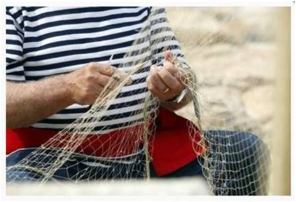

Mala akademija srdela
Poznat po svojoj bistrini, Fažanski kanal spaja Fažanu i Brijune, a ovdje se na «terrafermi» još u srednjem vijeku spominje tradicija ribarstva što kroz vjekove obujmljuje i našu suvremenost. Uz dva fažanska mola, u lučici se lelujaju ribarice i barke, pasare i batane; uz večernji isplov pod svjetlima i jutarnji žagor na rivi. Ribarstvo je dio obiteljske uzajamnosti: i danas ćemo ovdje vidjeti vrijedne Fažanke, koje po povratku svojih ribara čiste i krpaju mreže. Sardele, sardoni, skuše i lokarde… Evo najčešće plave ribe u fažanskim mrežama! Riba se prodavala okolnom stanovništvu, otpremala k brijunskim hotelima za stolove mondenih gostiju, te za preradu u mjesnoj tvornici. Bilo je ribe i za izvoz. Na brodskoj liniji Pula-Trst brodovi su pristajali u Fažani i otpremali ribu, kao i jastoge i rakove – granzevole – za tršćanske potrebe kao i za stolove u Beču. Danas gotovo čitava ugostiteljska ponuda, ovdje u Fažani i Valbandonu, nudi sardelu. Cestom sardela na rivi, kojom se s lakoćom prolazi pješice, tradicijski način pripreme sardela u restaurantima i konobama zadovoljit će svakog gosta. Mogućnost degustacije, uz objašnjenja o pripremi ribe, dio je turističke ponude i mjesnih tradicija, dok cjelogodišnji programi upućuju na posebne sadržaje. U svibnju unutar programa Ribarske akademije Sardela posebno je zanimljiva Fažanska škola soljenja ove plave ribe. Koliko ribe, a koliko soli, smještaj u limenke, ulje i začini… sve tajne vrsnih umijeća fažanskih ribara na uvidu su znatiželjnika. U svakom slučaju, treba to posoliti kako treba! A zato je potrebna škola. More na stolu (lipanj) i Rapsodija u plavom (rujan) nude kulinarsku lepezu pripreme sardela na 100 načina, gdje do izraza dolaze maštovitost i umijeće, kada iz jednostavnosti proizlazi raskoš dobroga teka. Degustacija ribe u Fažani na okusu maslinova ulja, uz čašu domaćeg vina, pravo je mjesto za nove susrete i nove spoznaje. More je škola života. Nevere i fortunali, pučina i zavjetrine… oslikavaju se plemenitošću na licima ribara, a njihove ruke pletu mrežu od starih i novih znanja. Fešta od sardela i Ča ribari znaju (kolovoz) su ribarske fešte na kojima ribari na različite načine predočuju vještine i umijeća ljudi od mora. Ribari izlažu stanare mora, stare i nove alate i naprave. Objašnjavaju posjetiteljima kao se pojedina riba lovi, kako se koriste alati, kako se pletu mreže, namataju igle… I svi su tada ribari: i djeca, i turisti, namjernici i slučajni gosti. Svijet ribara i ribarskih tradicija u Fažani nalazi svog odraza i u umjetničkim kreacijama. Tu gdje valići stižu do samih stolova obližnjih restorana, uz šetnicu na fažanskoj rivi, ovdje gdje more ide ukorak s minulim vremenima i sadašnjosti – evo, osebujne galerije na otvorenom: Park Sardela ! Kroz evokaciju srebrnasto-modre ribice, sardele, tematski je osmišljena ova skulptorska promenada u naslovima starog govora fažanskih ribara. Laštra, frega, ardor, šušana, buriole nazivi su skulptura posvećenih ovoj maloj hraniteljici, skromnoj odgojiteljici, sardeli. Tradicija ribarsko-turističkog mjesta srcem je i ponudom okrenuta moru, izazovom što na rivu zove iskusne domaće ribare, djecu i roditelje, turiste i moderne argonaute. Poziv je to u okruženje i drevnih ribarskih razgovora o sreći i umijeću, o šekama i poštama, milosti i nemilosti vjetra i valova, kroz priče u kojima odjekuju govor predaka i izazovi novih vremena. Nagrada Turističke zajednice Istarske županije Zlatna koza – Capra d´oro – u 2004. godini za projekt Ribarska akademija Sardela – u 2006. godini za projekt Park Sardela Simply the Best – u 2017. godini za projekt Ribarska akademija Sardela